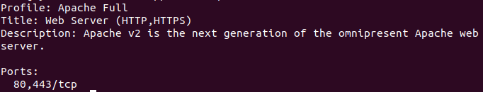
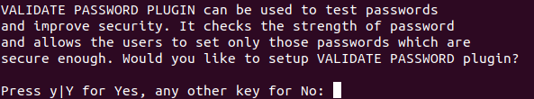
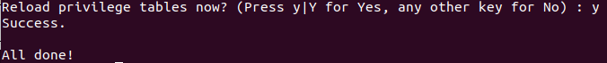
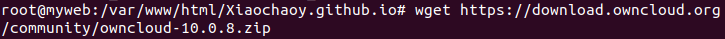
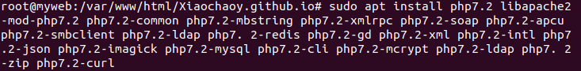

OwnCloud és una aplicació de programari lliure del tipus Servei d'allotjament d'arxius, que permet l'emmagatzematge en línia i aplicacions en línia. ownCloud pot ser instal·lat dins d'un servidor que disposi d'una versió recent de PHP i suport de SQLite, MySQL o PostgreSQL.
Utilitza aquesta comanda per crear un contenidor. El que esta després de launch és la versió que vols crear, i al final es el nom que vols crear.
lxc launch ubuntu:18.04 mywebUtilitza aquest command per executar, el bash et permet escriure commandes.
lxc exec myweb bashÉs un dels servidors web més populars en el món. Es troba ben documentat i ha estat utilitzat en bona part de la història del web, aconsegueix èxits per a ser escollit com el servidor més recomenat de pàgines web.
Abans d'instal·lar Apache, tenim que actualitzar les llistes de programes d'Ubuntu.
sudo apt-get update
sudo apt install apache2Pressionem Y i després Enter per continuar, així, la instal·lació es realitzarà.
Configuració tallafocs per permitir el tràfic web
Per fer-ho, verifica que el UFW té un perfil d'aplicació per a Apache amb la comanda següent:
sudo ufw app listEt mostrarà la següent informació

Si sol·licites la informació del perfil Apache Full, s'hauria de mostrar que el trànsit es troba habilitat per als ports 80 i 443:
sudo ufw app info "Apache Full"Et mostrarà la següent informació

Instalar MySQL per tenir un lloc on es desa usuaris... organitza i proveïrà accés a la base de dades.
S'ha d'utilitzar la comanda apt install per poder instal·lar aquest software:
sudo apt install mysql-serverExecutem un arxiu de comandes de seguretat que elimina alguns paràmetres perillosos, serà la següent comanda:
sudo mysql_secure_installationPreguntara si vols configurar el conector de validació de la contrasenya: VALIDATE PASSWORD PLUGIN.
Respon Y si estas d'acord, un altre resposta continuará sense realitzar habilitació.

Si has respos "Yes" et preguntará el nivell de contrasenya que vols:

Assenyala el nivell de la teva contrasenya i et diu si vols canviar o no:

Les següents preguntes pressiona N pulsa ENTER en cada suggeriment.

Això diu si vols prohibir que el root inici sessió de remot, en aquest cas li he donat a no.

Diu si vols eliminar la base de dades de prova i accedir-hi, pressiona Y per eliminar la base de dades de prova.

Despres pressiona Y per tornar a carregar les taules de privilegis.

En aquest punt, el teu sistema de bases de dades es troba configurat i pots seguir amb la instal·lació de PHP, el component final de la pila LAMP
PHP és el component de la configuració que processa codi per desplegar contingut dinàmic. Podeu executar arxius, connectar-se a les teves bases de dades MySQL per obtenir informació, i gestionar la visualització de l'contingut processat sobre el teu servidor web.
El podem configurar perquè s'executi sobre el servidor Apache i perquè es comuniqui amb la base de dades MySQL
sudo apt install php libapache2-mod-php php-mysql
/etc/apache2/mods-enabled/dir.conf
Utilitza aquestes comandes per instalar el OwnCloud.

Despues de la instalacio de OwnCloud, tienes que instalar las dependencias PHP necesarias

Paquetes LAMP:https://www.digitalocean.com/community/tutorials/como-instalar-en-ubuntu-18-04-la-pila-lamp-linux-apache-mysql-y-php-es
OwnCloud:https://maslinux.es/como-instalar-owncloud-en-ubuntu-18-04/